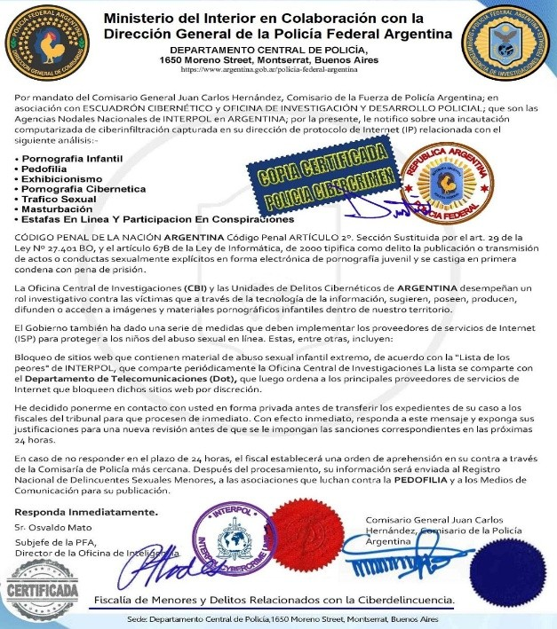
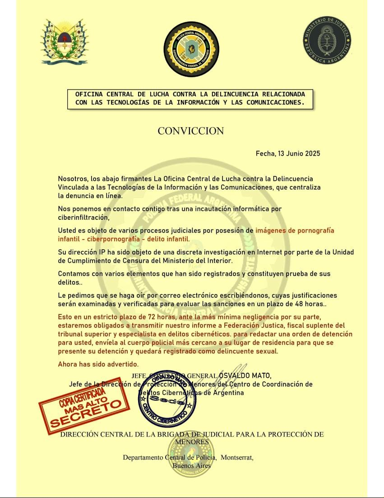

Es fundamental proteger a la víctima, sobre todo cuando presenta pruebas de delitos como el grooming u otros crímenes tecnológicos. No se debe culpar a la víctima por algo que no hizo, ya que ella no cometió ningún delito.
¿quién crearon el groaming ?
Fueron culpable quien entraron que eran los usuario que crearon la cuenta registrada en la empresa wix. Fueron culpable detectado por el país argentina la provincia de corrientes que eran mujeres y hombres que estaba en una casa ocultas detectado la ubicación lo identifico al culpable del groaming.
La prima , cuando estaba en la escuela secundaria, no se dio cuenta hasta hace poco de que había sido víctima de grooming, hasta que el primo le explico lo que consistía el groaming. El abuso ocurrió a través de un enlace o sitio web, lo que derivó en una estafa que afectó tanto a familiares como a otras personas desconocidas. El sitio web lo que vendia cosas foto y video intimas que lo robo espiaron todo al celular móvil y notebook.
El padre , trabaja en la Gendarmería Nacional, decidió no presentar una denuncia formal porque no le gusta involucrarse en conflictos ni generar problemas con nadie. Quiero mostrar ejemplos con evidencia basada en capturas de pantalla y fotografías, junto con un análisis de otros sitios web. Esta evidencia demuestra que ciertos usuarios accedieron a esos sitios y crearon cuentas en
Wix.com. Sin embargo, existe una sospecha particular sobre la empresa Wix.com, ya que se ha detectado que varios usuarios están utilizando su servicio para crear contenido relacionado con grooming. Frente a estas situaciones, Wix tiene la obligación de actuar, denunciando a los responsables y bloqueando sus cuentas para prevenir la difusión de contenidos ilegales que hacen los usuarios quien entraron a ese
Crearon una cuenta falsa en Instagram para engañar a otros usuarios, entre ellos seguidores, familiares y desconocidos que no conocían a la víctima ni a su entorno familiar.
El sitio web vinculado al caso de grooming error 4004 en sitio web actualmente muestra un error 404, lo que impide acceder al contenido original. Si bien esto podría indicar que el material relacionado con el caso fue ocultado o eliminado.
Existen otras posibles explicaciones, tanto técnicas como legales, que también podrían justificar esta situación:
Eliminación por parte del creador: El autor del sitio pudo haber borrado el contenido o cerrado la cuenta, ya sea por decisión propia, presión externa o para evitar posibles consecuencias legales
Intervención de la plataforma: Wix, como proveedor de alojamiento web, pudo haber eliminado el sitio si detectó que el usuario violaba sus políticas legales. También es posible, aunque no se puede confirmar sin pruebas que personal técnico o analistas de Wix hayan intervenido para eliminar el sitio con el fin de prevenir implicaciones legales para el propio usuario que creo el grooming.
Los delincuentes siempre dejan rastro. Ese sitio web es excelente porque escanea, analiza e investiga, además de capturar la pantalla para conservar evidencia del delito. Es una herramienta utilizada que podre tenes rastros de todo los sitio web que se guarda y no se elimine esa evidencia es el análisis con url scan.
muestro evidencia dejo rostro 2 no se puede ocultar el delito comentidomuestro evidencia dejo rostro 2 no se puede ocultar el delito comentido
Los estafadores suplantan la identidad de instituciones oficiales, como la policía, los tribunales o agencias fiscales, y exigen pagos urgentes, transferencias bancarias o la descarga de archivos adjuntos maliciosos. En algunos casos, incluso adjuntan documentos falsos en formato PDF, como órdenes judiciales. Cabe destacar que la víctima o su familiar no tenía ninguna causa judicial pendiente, por lo que el objetivo de los estafadores era únicamente chantajear o extorsionar a una persona inocente que no había cometido ningún delito.
En esta imagen se muestra la documentación, la cual es completamente falsa, aunque falta el archivo adjunto que fue enviado por el estafador vía correo electrónico a la víctima que era a la familia federico billordo y su prima julieta Ojeda.
La evidencia pdf documentacion falsa.
 